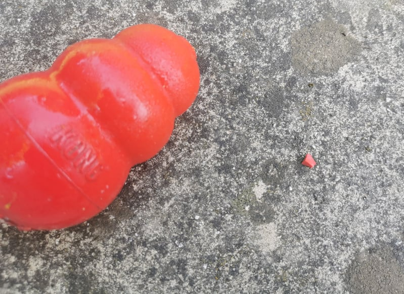

Scent is the dogs primary sense. Dogs have up to 100 million receptors in nose. In comparison, humans have only 5-6 million.
A dog must find a specific odor that the handler has hidden, ignore distractions and alert the handler when he finds it.
After the dog has found the target odor, he is rewarded with either food or a toy.
There are many different variations these days; you can use essential oils, like birch, anise, or clove.
Or you can also use kong pieces, which is what I use. Firstly you start with the big size kong and slowly cut it down until you get a tiny 3mm size piece, which is what the dog is searching for at the end.
If you would like to see scentwork in action click here .